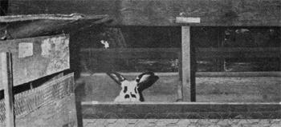
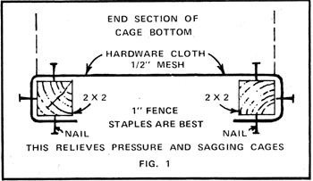
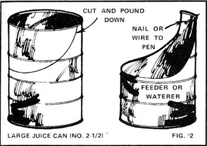
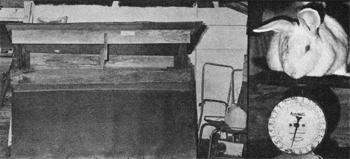

With the meat situation what it is and the economy in a turmoil, now is a good time to consider the rabbit business. The best way I know to put good food on the table and a few dollars in your pocket, without a large investment. The profits can come in many ways: You can sell the urine for laboratory use, the manure for fertilizer or worm growing, even the feet for good luck charms. Meat, however, is by far the most important product.
What follows is a mini-manual that tells how to get started on a shoestring, without the costly items the so-called experts say you should have. I'll try to cover all phases of a new operation and to help the novice avoid pitfalls that aren't mentioned in books or other guides to this subject. Nevertheless, experience is still the best teacher.
The hare-raising business is adaptable to any location. Many owners use sheds, backyards, and old barns as sites for rabbit warrens (a high-class word for an area of pens).
My herd is kept in a barn which I built-by the hit-and-miss method-especially for that purpose. The structure is 16 feet wide and 24 feet long, and was constructed from used and inexpensive material at a cost of less than $200. The roof rises to 12 feet at the center and slopes to 8-foot sides. Since rabbits do best in semidarkness, there are only three small windows (cut high in the walls, above the four-foot level). On the back side-which faces south-a hinged, 10-inch-wide board runs the length of the building about four feet from the ground. This flap is raised and propped open during the summer. The opposite wall includes a Dutch door with a 36-inch fan in its lower section to move the air up and out.
The building has a dirt floor a must, to absorb the urine. This holds down odors and makes cleaning much easier. Any other type of surface has to be washed every day and is too much trouble.
Here in the deep South (I live in Alabama), no heat is required in such a shelter if the times of breeding ate controlled. If any supplemental warmth were needed I'd use a homemade drip-type stove that burns used motor oil just enough to keep the temperature above freezing. This fuel is still readily obtainable and-so far-quite cheap.
My building houses 15 does and 3 bucks. Only 2 mates are really needed, and the old one-having seen better days-will soon become sausage. The animals' pellet feed (available at any farm supply store) is kept in garbage cans to protect it from rats and other varmints. .
In one front corner of the barn is a butchering table built of a double thickness of 1" X 6" lumber. It's 36 inches wide and 48 long, and slopes gently to a wooden chute at one end so that all remains can be dumped into a large bucket and fed to chickens or togs or buried for fertilizer.
Pens must be provided before you get your initial stock. Each rabbit should have a space two feet wide, three feet long, and two feet high plenty of room in which to exercise and rear young. Larger units can be built to house numbers of feeders that are due for the market. Whatever the size of the cage, it must be raised high enough off the ground to let you rake or shovel out the manure easily.
Even if you must buy lumber to build pens, the cost will still be less than half that of commercial hutches. Regular 2 X 4's are good uprights, and the bottom wire-preferably half inch mesh hardware cloth that allows most of the manure to fall through-can be mounted on 2 X 2's. The flooring will get heavy use and should be rolled completely around the 2 X 2's and nailed firmly. (See Fig. 1.)
Since rabbits-especially the younger ones-can climb, a top cover for the pen is a must. This and the exterior walls of a hutch can be made of one-inch mesh chicken wire or narrow spaced boards. Leave a good-sized opening for the wooden door large enough to admit the nesting box and to let you reach every part of the interior. Old pieces of plastic hose, split lengthwise, make ideal hinges.
If you construct one solid cage the full length of you building and intend to divide it, use wood-not wire-for the internal walls. Wire dividers tend to rust from urine deposits, and the rabbits (whose nature is to want to get together) will work on the netting until it's broken through. A partition of 1 X 4's with narrow spaces between boards is much more satisfactory. Although the little beasties will chew the wood, it doesn't make them sick and, so, the habit is generally not much of a problem.
If you build double-decker pens, the lower level should have a metal roof with at least a six-inch slope and the upper tier should be raised six inches above this covering. The intervening space allows you to push down the debris from the top pens without fouling those underneath.
Incidentally, never hose down your herd's quarters with water. The dampness causes foul odors, makes a mess, and isn't good for the rabbits.
Outside cages must have a water-repellent roof, and in cold weather the lower part of the exterior should be covered with tar paper to'break the wind. Since litters can't be born outdoors when the temperature is below freezing, adjust your breeding schedules accordingly. Open-air pens are, however, good for bucks, half-grown rabbits, and those. being held for market.
Commercial automatic feeders allow the bunnies to eat and spill too much. The waterers-other than the teat style-rust out the wires and are so flimsy that the liquid is slopped about The following container serves either purpose and saves expense and trouble.
Find a No. 2-1/2 or large juice can and a pair of tin snips. Start an inch from the seam and cut downward to within two or three inches of the bottom, halfway around the wall and back up the other side. Leave an upright section of metal a couple of inches wide, to be attached to the wire or wood of the cage. (See Fig. 2.) Roll the sharp edges and pound there with a hammer until they're smooth enough not to catch the animals' fur. Such devices last longer if they're painted (let them dry thoroughly before use). Don't fasten the containers too tightly to the pen you should be able to tip them up sideways to be emptied and cleaned. And don't experiment with plastic feeding or watering gadgets! Only wood ear metal should be used around rabbits.
OK, the pens and fittings are all set and it's time to choose your initial stock. You can do this quite easily, without joining any clubs or being a sucker for the first rabbit ad you see. (There's no need to buy at a distance at all, but if you dc, don't try to have your purchase shipped by air freight. The airlines are not equipped to handle livestock.)
The best procedure is to go to your nearest producer, burlap bags in hand, and select from his younger stock even if you have to feed the animals awhile before they mature (at six months). They need time to get used to you and their new home.
You're after meat animals, not show rabbits, so bloodlines mean nothing. Look for broad heads, heavy bones, large pads (feet), and light color. Examine the ears for canker and the pads for raw sores. A three months-old-old's live weight should be four or five puonds.
A good start for a beginner is a buck and two or three does, depending on how many pens you have. A young animal's sex, however, cannot be determined with the naked eye so how do you know which is which? You could depend on the seller, but it's better to be sure. Take the rabbit by the scruff of the neck and slowly run the fingers of the other hand down the belly. If the area is very smooth, you have a doe. If you feel elongated tassels close to the body, the critter is a buck. You should be able to buy your stock for the dealer's market weight price. A full-blooded rabbit (not registered) is never worth more than $10.00 and then only if of breeding age. (Prices may have risen somewhat in the year since Mr. Bell wrote this article .MOTHER.)
At the outset, forget the "Oh, they're so cute!" attitude toward your new bunnies. They're livestock, not pets and very good livestock, too (the cleanest and most disease-free of all).
You'll find that each animal has its own temperament some easy to handle, others more difficult. When you lift a rabbit, hold it by the scruff of the neck and place your other hand under its rear to take the weight. Any other technique may hurt the animal and get you some scratches from those big hind feet.
Speaking of feet, that's the area in which domestic rabbits most often have health problems. Open wounds on the pads can be treated with a cotton swab saturated with CamphoPhenique, obtainable from any drugstore. A few applications should clear up the trouble. Soreness can be dealt with in the same way, but you should also put extra straw or a flat board in the pen so that the animal can get its feet off the wire.
Flies bother rabbits in the summer, and can be controlled with the kind of fly strips sold by MOTHER'S General Store. Don't use any spray around your herd! It affects the animals' breathing and may kill them.
Feed your bunnies rabbit pellets, about three ounces a day per animal. Give them plenty of clean water. An optional addition is a handful of hay or a lettuce or cabbage leaf once in a while. Go easy on the greens the critters' systems aren't geared to handle much vegetation in confinement. Since rabbits are nocturnal and usually eat at night, the evening feeding is the most important.
(The feeding of rabbits is a controversial subject Harlan H. D. Attfield-a Peace Corps representative who specializes in low-cost rabbit-raising operations for underdeveloped countries-recommends giving the animals grain in the morning and all the greens they'll eat overnight. See his letter in MOTHER NO. 20 for this and other advice on the care of your herd. A detailed analysis of rabbits' nutritional requirements is included in The Homesteader's Handbook to Raising Small Livestock by Jerome D. Belanger, $8.50 from Rodale Press or from MOTHERS Bookshelf. -MOTHER.)
Each member of your herd should have a roll of rabbit salt, obtainable from a feed dealer for about 104. The supplement should be attached to the cage so the animal can lick it at will. It will last about three months. Without sufficient minerals in their diet, the does may eat their young.
A female is ready to breed at the age of six months. Put her into the buck's pen for service, not vice versa. Don't be surprised if the male falls over for a few seconds after service (this is normal behavior) and don't remove the doe at once. Let the pair mate a few more. times just to be sure (leave them together for maybe 15 minutes).
Record the date of mating on a piece of cardboard mounted on the front of the doe's cage. Note which buck was used, if you have more than one, since the same male shouldn't serve more often than once every four days. (Also, it's advisable to keep track of each animals' performance so you'll know which individuals are the more productive .MOTHER.)
The doe should be provided with a bunny box 25 days after breeding. This nesting container should be about 12 X 18 inches, with four-inch-high sides and a solid bottom. It can be made from crates thrown out by a grocery or supermarket. The doe will line the babies' bed with her own fur (she has plenty), but you can help by giving her a little hay or straw to supplement the job. At a total of 30 to 32 days from conception she will have had, her first litter. (The USDA's Agriculture Information Bulletin No: 358-Selecting and Raising Rabbits-recommends inspecting the litter the day after birth and removing any dead or deformed young. The babies should be left with the mother until they're weaned, at about eight weeks by which time they will have reached fryer size. MOTHER.)
A doe that's rebred shortly after her young are weaned will produce four litters a year. Many backyard rabbit growers schedule matings for six weeks after kindling, and commercial operations cut the period to three weeks or even two. Since female rabbits can be bred whether or not they're in heat, the timing is up to you. If you push your breeding stock too hard, though, you risk small litters, undersized young, and a shortening of the animals' useful life. 1 breed my does four times a year and get eight or ten healthy babies at a time.
After a female has produced for a good five-year span, it's advisable to replace her with younger stock. If she gives birth to only two or three young in two consecutive breeding's, s1l should go to the slaughter at once. You can't afford to fez nonproducers.
About killing and dressing: You may not relish this pa of the business, but you'll get used to it and after the first 100 or so the whole job won't take you more than minutes.
Take a good grip on the rabbit's hind legs with your left hand let the head drop downward, and hit the animal reasonably hard across the back of the skull with a stick, hammer handle or some such (or shoot downward at the same area with a .22 Cut the throat and hold the body in a head -downward position until the blood drains out maybe five minutes.
Place the rabbit on your butchering table. Pull the hide al the center of the back away from the carcass and insert a knit) to cut a three-inch gash in the skin. Insert the fingers of bona hands and pull hard until the hide is pushed down to the head and pads. (Note: This method of skinning-often used on wilt: rabbits is seldom recommended by homesteaders who wan; to save their rabbit pelts for mittens, comforts, etc. See any good manual on rabbit production for methods of skinning that produce a one-piece pelt suitable for tanning.- MOTHER.) With a knife and hammer, cut off the head, lower legs, anal tail. At this point you have a clean carcass which still cons the intestines.
Pull up the midline of the belly and slip your knife » carefully, so as not to cut the innards. Slide the blade forward and out at the neck cavity, and do the same toward the same to get the bowel out, break the hind legs away from the spine bending them backward. The carcass will then be completely open. Take out the lungs (light pink), heart, and kidneys and save them for pet food. Remove the liver carefully. That elongated small dark area on the back of the organ is the gall, which must be cut out and thrown away. Pull out the guts, dispose of them, and place the parts you're keeping in a bucket of cool water.
A word of caution: Wild rabbits sometimes develop a disease tularemia-which is indicated by spots on the liver. This isn't common in domestic stock, but it could happen in which case the entire carcass is dangerous to human beings and must be destroyed. The disorder can be transmitted merely by handling infected animals, so it's a good idea to either wear rubber gloves or make sure you have no cuts on your hands when you butcher a rabbit.
To cut up the fresh carcass, remove the front legs with a knife (they're held by muscle only). The back legs have a ball-and socket joint which can be severed with a hammer and knife. Cut the back into three equal pieces and there you are: seven pieces of good meat with very little bone. Place all the parts in cool water to remove the animal heat (a two-gallon bucket will hold the edible portions of three rabbits), and you're finished.
If you intend to store your clean, cut-up rabbit or rabbits, put the meat into one freezer bag, the pet food into another, and the liver into a separate container (unless you intend to sell it with the meat). The livers of three bunnies, with onions, make a meal that can't be beat. If you have a market for the feet-as good luck charms-soak them in strong salt water overnight and hang them to dry, toes up. They should bring 10d to 154 each.
In Europe the rabbit is considered a delicacy and brings the very top meat dollar. It's less widely eaten in this country, however, and you'll probably have to create your own market. Put notices on bulletin boards, and run classified ads -" Grain rabbit, all white meat, pan ready," for example-including the selling price and your phone number.
Try to keep the price of your rabbit 204 per pound under that of lean ground beef, and under a dollar in any case. Let the customer weigh the frozen rabbit and figure the charge himself and always sell under the nearest quarter pound. buyers are very skeptical in this day and age, and proof that you're honest puts them in a receptive frame of mind (which you should use to best advantage by setting up their next order to coincide with your dressing schedule). Alternatively, you can get the customer's phone number and call him a week before you're ready to kill.
Once you get started, word of mouth should bring you enough customers to keep you busy. Be prepared to sell in lots of six after the first orders, since most people now have freezers of some sort. You can even encourage bulk sales by offering to throw in free pet food. (Now you see the reason for salvaging the innards!)
And don't forget the possibility of barter. If your butcher or meat wholesaler likes rabbit, trade him pound for pound for beef or pork. Forget the comparative prices you cant lose.
One easy way to build business is to serve rabbit at company dinners. First, though, you must know how to cook it and the following suggestions should give you some ideas. (You'll note that since rabbit has no real fat of its own-most of these recipes require you to add some. Bacon is best. Otherwise, anything you can do with store-bought meat can also be done with your own home raised hare.)
PAN FRY: Parboil the meat about 20 minutes with sliced onion and a dash of sage. Remove the pieces and fry them in bacon grease or vegetable oil.
SHAKE AND BAKE: Proceed as with chicken, but cook the meat under light foil.
BAKE: Parboil a whole rabbit 20 minutes. Wrap it in bacon strips, followed by loose foil, and bake it for one hour. (Mr. Bell didn't mention oven temperature, but around 3500 should be OK. MOTHER.)
STEW: Boil the meat off the bone, cut up vegetables, and stew them with the boned rabbit until the ingredients are done. Stewed rabbit is stringy but good.
SAUSAGE: Boil the meat until it's very tender, remove from bones and run it through a home food grinder. Mix in a pound of store-bought sausage, make the combination into patties,and fry them.
A hand-printed sign in your feed dealer's place of business will probably lead to some sales of live rabbits as breeding stock for other beginners. You might also check your state laws on trade in Easter bunnies. If they're not supposed to be sold as pets, you can omit that word from the ad and offer "Easter bunnies: live (price), dressed (price)." (You may prefer not to sell pets at all, except to friends whose homes you know well. The hapless Easter bunny is likely to be overfed and mauled to death by small children, or loved for one day and then neglected by a family that doesn't want the long term responsibility of a domestic animal. Slaughter for food is far more humane. -MOTHER.)
Rabbit manure won't burn plants as do chicken droppings, and it can be used as is on any flower or vegetable. If you sprinkle a little lime under the pens to hold down the odor, you'll also add a much needed ingredient to this fertilizer.
You should be able to get at least 5d a pound for any manure you don't put on your own garden. Rose growers and worm farms pay the top dollar for this product. (Did you save your heavy feedbags? They're ideal containers for the sale and transport of rabbit droppings.)
If any of your customers raise flowers, you might give them a 25 pound bag of fertilizer along with a big meat order. Remember, your business is-built on good will.
Let's pause and sum up the gains from one two - and a half fryer: Besides meat, the animal has given you about six ounces of pet food, the start of a liver-and-onion dinner for yourself and the feet, too, if you have a market for them. During its lifetime, the same rabbit has also manufactured about 20 pounds of top grade fertilizer worth at least a nickel a pound. At current prices (late 1973), that $1.00 bunny has made you $3.00. No other livestock can do so much.
As I write this, I expect my 15 does and three bucks to produce 400 rabbits during the coming season. That converts into more than 1,000 pounds of good white meat (over and above what's used in our own kitchen). Sure, pellet feed is expensive now but I still expect to put a few dollars in my pocket from just an hour's work a day. Not bad, for a hare raising business.
|
 |
 |
 |
|
 |
|
|